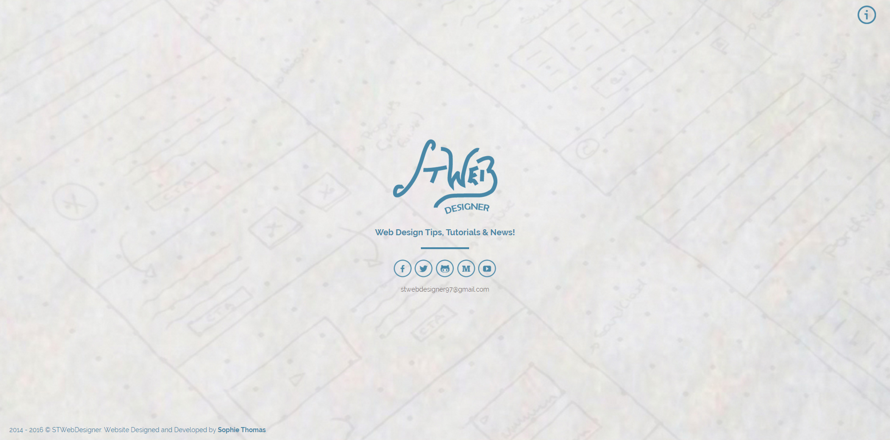
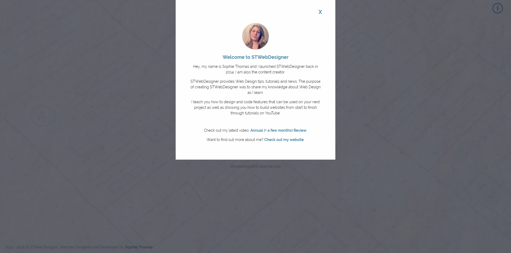
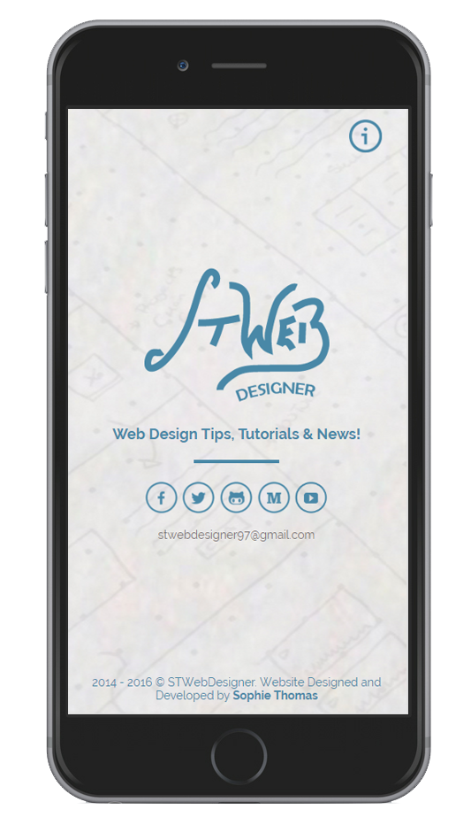
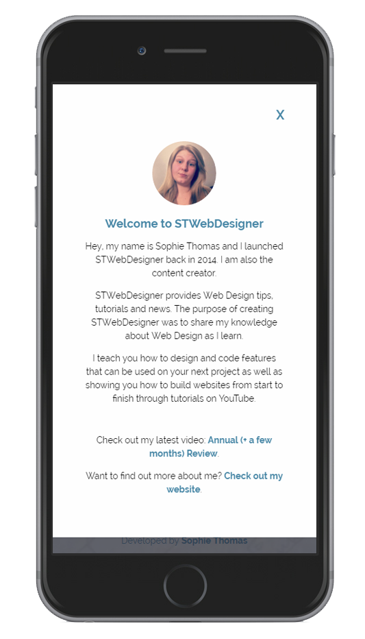

STWebDesigner
Project Completion Date: 19th March, 2016
After deciding the previous version of the website was no longer useful for users visiting the site I started the process of redesigning it.
The problem with the previous version of the website was that content on the site wasn’t all the content I produce under the name of STWebDesigner and all the buttons just linked externally to YouTube. Because of this I felt that I needed to redesign the website.
Before jumping straight into the coding I created mockups of my ideas before refining my final design in Photoshop. The idea behind the new design was to have a simple landing page that directs people to the platforms I publish content on and modal window with a link to the most recent tutorial along with information about what STWebDesigner is about.




To keep the design and overall look of the website simple I kept the backgrounds light and used the colour blue to make the content on the website stand out. I also used suttle animations on the modal window and icons to catch the users’ attention. Finally, I made the website responsive to give users viewing on mobile devices a better viewing experience.
Overall, I feel that this website does meet my intended purpose as the design is simple and directs people to I publishes content under the name of STWebDesigner.